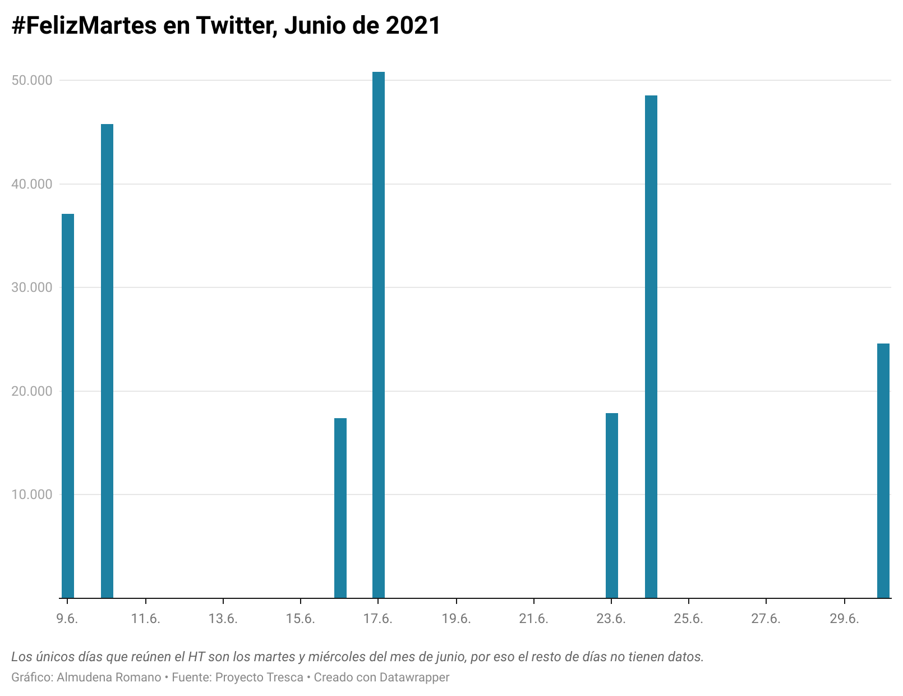

Tercer ejercicio: gráfico con Datawrapper
¿Por qué un gráfico de barras?
El objetivo de este trabajo consiste en realizar un análisis del desarrollo de #FelizMartes durante el mes de junio de 2020 a partir del Proyecto Tresca. Por eso, el gráfico más apropiado para reflejar dicha evolución es uno de barras, ya que refleja de forma más visual cuan utilizado es este hastag a lo largo del mes.
Como se puede apreciar solo aparecerán datos en los martes del mes de junio. Sin embargo, los miércoles también recogen este Hastag, aspecto cuanto menos curioso. Quizás se debe a la diferencia horaria que existe a nivel mundial.
Opté por estudiar la evolución del uso de este hastag sobre el Martes porque existen estudios que confirman que es el peor día de la semana. Al mismo tiempo elegí el mes de junio porque #FelizMartes se convirtió en el hastag más utilizado durante este mes.
Procedimiento de la elaboración de la gráfica
Open Refine
En primer lugar, localicé el documento csv y lo exporté en el Open Refine, después seleccioné cómo quería que apareciera y escogí la opción de separado por comas. A continuación, suprimí las columnas que no iba a necesitar y me quedé únicamente con los días en los que se había publicado y la cantidad de HT publicados ese día.
Para continuar trabajando utilicé diferentes herramientas que me permitieran elegir mi Hastag.
- Faceta de texto: para seleccionar el #FelizMartes, como me aparecía el mismo hastag de diferentes formas (#Feliz Martes y #FelizMartesAtodos) recurrí a la opción de cluster para unir todos en un mismo Hastag.
- Añadir columna: tuve que añadir dos columnas. La primera de ellas para introducir la columna “Meses”. La segunda de ellas cuando conseguí recopilar todos los hastags en un mes puse los datos que me daba de los días y quité la parte derecha de la fecha, es decir, los segundos. Para ello utilicé la opción de editar celda y escribí directamente.
- Value.replace y faceta de estrellas: para agrupar todos las fechas en meses tuve que recurrir a value.replace y a la opción de faceta de estrellas. Para ello, sustituí toda la columna por la palabra Marzo, para que luego al seleccionar con estrellas, ejecutar la faceta y suprimir los que eran valores falsos fuera más fácil utilizar el value.replace.
Lo que me ha resultado un poco más complicado ha sido agrupar los datos del mismo día. Por eso, he dejado en la gráfica el número de los tweets del día, no el conjunto de ellos.
Datawrapper
- Por último subí el csv al Datawrapper y utilicé solo dos columnas, la de “Días” y la “Cantidad de Tweets”. El propio programa detectó que eran fecha y cantidad así que no tuve que tocar nada más.
- Después escogí la gráfica de barras porque era lo que más se acercaba a mi intención inicial sobre el análisis. En este mismo apartado seleccioné el máximo y el mínimo de datos del eje Vertical que se corresponde a la cantidad de Tweets. Para el eje horizontal escogí la opción automática ya que el resto solo se correpondía a los años y no reflejaba los días del mes. También elegí el color azul y el tamaño en el que quería que apareciera, en este caso en relación a la pantalla en la que se proyecta (ordenador). Añadí una breve leyenda en la que aparece la creadora, la fuente y el nombre de la aplicación utilizada.
- Publicarlo y descargarlo en PNG.
Terminal:
- Renombré la gráfica que había descargado para que me fuera más fácil localizarla y la subí a la carpeta de imagenes del Github.
- Escribí el documento con el editor de texto nano.
- Lo publiqué en el Github a través de la terminal.